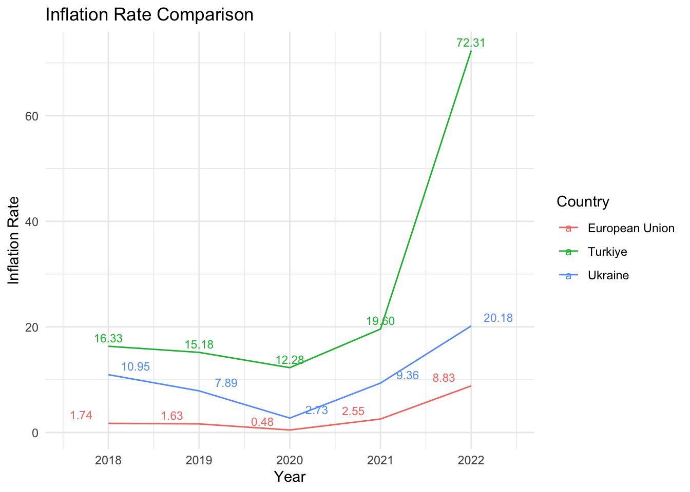
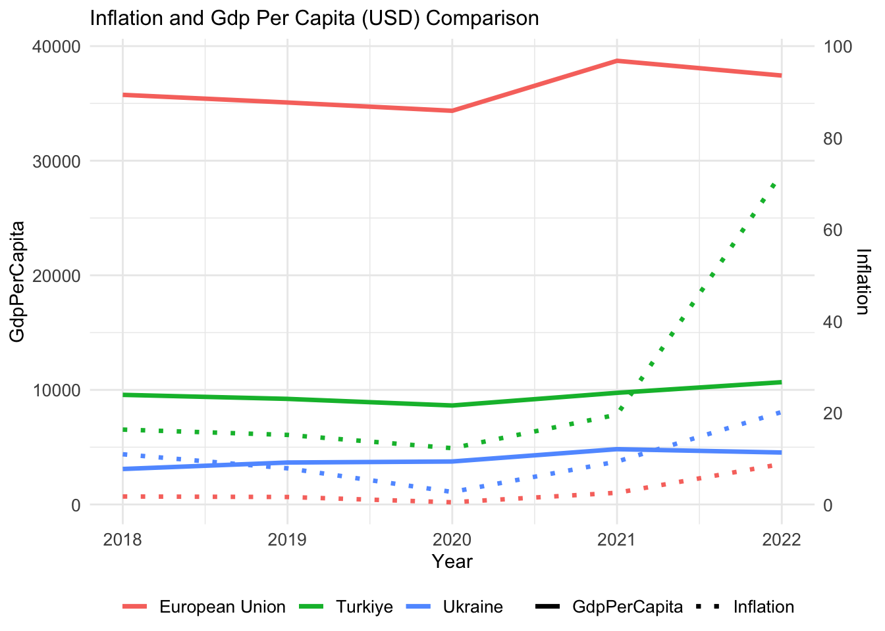

In this analysis, we focused on the years 2018 to 2022, we conducted a comparative analysis between two countries, Ukraine and Turkiye, both aspiring to become candidates for the European Union. Utilizing key indicators such as total population, GDP per capita, age dependency ratio, inflation, unemployment rate, and gender-specific labor force participation rates, we aimed to evaluate and contrast the socio-economic landscapes of these nations. The data collected from the World Bank allows us to gain insights into the demographic structure, economic performance, and labor dynamics, providing a comprehensive overview of the key factors influencing their candidacy for EU membership. This analysis will contribute to a deeper understanding of the current state and potential trajectories of Ukraine and Turkiye in their pursuit of EU accession.
Key Takeaways:
This report provides a comparative assessment of the credentials of Turkiye and Ukraine, two candidates for European Union (EU) membership, using World Bank - World Development Indicators data from 2018 to 2022 by using key indicators such as population totals, GDP per capita, age dependency ratios, inflation, unemployment rates, and gender-specific labor force participation rates were essential in this evaluation of their socio-economic landscapes. (LINK row+used)
The post- COVID-19 global economic landscape significantly affected these nations. Turkiye, battling the highest inflation among the three entities, showed a dramatically heightened inflation rate in 2022, which was about four times the rate of the previous year.
Turkiye’s larger GDP per capita, population, and a comparatively lower age dependency ratio puts it in a potentially advantageous position for EU membership. However, both countries face challenges in labor dynamics such as unemployment and labor force participation rates.
The effects of war in Ukraine have contributed to a major decline in the country’s population and an increase in their age dependency ratio due to a decline in the young and potentially working-age population.
With its overall economic state and younger population, Turkiye might be slightly in a more favorable position for EU candidacy. However, although both countries possess compelling economic and demographic capacities, they need to address crucial changes in areas such as political stability and economic harmonization to advance their pursuit of EU accession.
Outcomes:
GDP per Capita:
The GDP per Capita Comparison graph reveals unique economic trajectories for each country or region. The data shows that the European Union, comprising 27 member countries, consistently maintains the highest GDP per capita among the three regions.
In 2018, the European Union’s GDP per capita stood at approximately $35,700. It experienced a slight downturn in 2019 and 2020, but rebounded robustly in 2021 to nearly $38,700, and continues to perform strongly in 2022 at about $37,400.
In contrast, Ukraine’s GDP per capita hovers around $5 million, while Turkiye’s stands near $10 million, indicating that Turkiye’s GDP per capita is double that of Ukraine’s. Moreover, Turkiye’s population is 1.5 times larger than Ukraine’s, affirming its larger economic scale.
Notably, the European Union’s GDP per capita is over four times that of Turkiye and approximately twelve times that of Ukraine, highlighting the economic strength of the European Union. However, it is crucial to consider the Union’s significantly larger population and diverse economies, which contribute to this superior statistical performance.
Code
ggplot(world_bank_data, aes(x = Year, y = GdpPerCapita, fill = Country)) +geom_bar(stat ="identity", position ="dodge",alpha =0.7) +geom_text(aes(label = scales::label_number_si(accuracy =1)(GdpPerCapita)), position =position_dodge(width =0.9), vjust =-0.5, size =3) +labs(title ="GDP per Capita Comparison (USD)",x ="Year",y ="GDP per Capita (USD)",fill ="Country" ) +scale_y_continuous(labels = scales::label_number_si(accuracy =1)) +theme_minimal()
Population and Age Dependency:
In the context of population, both the European Union and Turkiye exhibit a gradual increase over the years examined. The population of the European Union saw a slight increase from 447.1 million in 2018 to 447.3 million in 2022. Turkiye’s growth was more pronounced, rising annually from 81.4 million to 84.9 million. Meanwhile, Ukraine experienced a population significant decline, falling from 44.6 million in 2018 to 38 million in 2022. This could be linked to Ukrainians leaving the country due to war, and potentially losing their lives in the war.
Code
ggplot(world_bank_data, aes(x =factor(Year), y = Population /1e6, fill = Country)) +geom_bar(stat ="identity", position ="dodge", alpha =0.7) +geom_text(aes(label = scales::label_number_si(accuracy =1)(Population)), position =position_dodge(width =0.9), vjust =-0.5, size =3) +labs(title ="Total Population Comparison",x ="Year",y ="Population (Million)",fill ="Country") +scale_y_continuous(labels = scales::label_number_si(accuracy =1)) +theme_minimal()
When considering the age dependency ratio, a similar concurrently rising trend was observed in the European Union and Turkiye, mirroring the aforementioned population changes. The European Union’s ratio increased from 54.7% in 2018 to 56.6% in 2022, and Turkiye’s rose from 46.3% to 46.8% over the same period, suggesting a broader societal ageing process in these regions.
Contrary to its population trend, Ukraine’s age dependency ratio also rose, from 47.21 in 2018 to a peak of 52.05 in 2022. This indicates a reduction in the country’s young population and an increase in its elderly population, contributing to a significant rise in age dependency. Such a trend could potentially be attributed to the younger and working-age populations leaving the country due to warfare.
Code
ggplot(world_bank_data, aes(x = Year, y = AgeDependancyRatio, color = Country, group = Country)) +geom_line() +geom_text(aes(label =paste0(scales::comma(round(AgeDependancyRatio), big.mark =","), "%")), position =position_dodge(width =0.9), vjust =-0.5, size =3) +labs(title ="Age Dependency Ratio Comparison",x ="Year",y ="Age Dependency Ratio (%)",color ="Country" ) +theme_minimal() +scale_y_continuous(labels = scales::percent_format(scale =1), limits =c(40, 60), breaks =seq(40, 60, by =10))
From the age dependency perspective, it’s notable to highlight that the ratios reveal Turkiye as the youngest among the three. As of 2022, Turkiye’s age dependency is significantly lower than the Ukraine and the European Union. This indicates that Turkiye, comparatively, has a larger proportion of its population in the working-age bracket. This youthful demographic could potentially mean a stronger workforce and consumer market, both are essential drivers for economic growth.
On the contrary, the European Union records the highest age dependency ratio. This trend suggests a mounting pressure on the active population to provide for the social and healthcare needs of the elderly in the European Union and has important socioeconomic implications, requiring proactive planning and social policy adaptations, particularly in dealing with healthcare demands, retirement schemes, and possibly stimulating birth rates or immigration to ensure future generation replacement.
Inflation:
According to 2018-2022 data, the European Union inflation rate is the lowest while Turkiye’s is the highest. Until 2020, all three entities are showing decreasing inflation rates. However, after Covid-19 pandemic relaxed in 2021, all started showing higher inflation rates, especially Turkiye with a dramatic rise in 2022 almost 4 times higher than previous year.
Why is inflation decreasing during COVID-19 pandemic?
During COVID-19 pandemic, the economic landscape underwent a series of fluctuations. Lockdowns and heightened uncertainty led to reduced consumer spending, prompting businesses to lower prices in a bid to stimulate activity. Global supply chains encountered disruptions, resulting in shortages in certain sectors. Nevertheless, overall prices were restrained due to a decrease in economic activity. A positive outcome for consumers emerged as oil prices took a nosedive, acting as a buffer against inflationary pressures. On the flip side, job losses exerted downward pressure on wages. Interestingly, this wage constraint facilitated cost-cutting for businesses, contributing to the overall moderation of inflation. To navigate these challenges, central banks intervened by lowering interest rates to invigorate the economy. While primarily aimed at encouraging spending, these measures also played a pivotal role in maintaining relatively subdued inflation levels amidst the prevailing uncertainties.
Code
ggplot(world_bank_data, aes(x = Year, y = Inflation, color = Country, group = Country)) +geom_line() +geom_text(aes(label = scales::comma(Inflation, big.mark =",")), position =position_dodge(width =0.9), vjust =-0.5, size =3) +# Barların üstüne değerleri yazmak içinlabs(title ="Inflation Rate Comparison",x ="Year",y ="Inflation Rate",color ="Country" ) +theme_minimal()

Why is inflation dramatically increasing after COVID-19 pandemic?
After the challenging times of the COVID-19 pandemic, things took an interesting turn for inflation. As the world reopened, people started buying a lot more stuff, creating high demand. However, there were problems in getting products out smoothly because of supply chain issues and higher costs for businesses. They had to charge more for their products to cover these increased expenses. On top of that, the job market was a bit tricky, with difficulties in finding workers and wages going up. The global economy also picked up, leading to higher demand for goods, and the measures taken by governments and central banks to boost the economy played a role in driving up prices. When you compare these prices to the low points during the worst of the pandemic, it looks like a significant increase, adding another layer to the story of post-2020 inflation.
Code
ggplot(world_bank_data, aes(x = Year, y = UnemploymentRate, color = Country, size=Inflation)) +geom_point() +labs(title =" Inflation Rate and Unemployment Rate Comparison",x ="Year",y ="UnemploymentRate",color ="Country") +theme_minimal()
Special Cases of Turkiye and Ukraine
One of the main causes of the economic crisis in Turkiye is the rapid and unstable increase in foreign exchange rates in conjunction with high inflation. This situation has particularly caused inflation to rise to 72.3% in 2022. Moreover, the negative effects of high inflation rates on unemployment rates and the overall economic situation have been observed. This situation indicates that the Turkish economy is in a crisis.
On the other hand, the situation in Ukraine is slightly different. The inflation rate in 2020 is relatively low at 2.73%. However, the rate increased to 9.36% in 2021. This increase is largely due to ongoing war and political instability in the country. The war has hindered production and consequently caused prices to increase.
Inflation rates in both Turkiye and Ukraine have significantly increased due to different reasons. Both countries may need to make policy changes to address this situation. It will be important to focus on economic stability and exchange rate policies in Turkiye, and peace and security issues in Ukraine.
Code
world_bank_data <- world_bank_data %>%filter(!is.na(Inflation)) # NA değerleri filtreleggplot(world_bank_data, aes(x = Year, group = Country)) +geom_line(aes(y = GdpPerCapita, color = Country, linetype ="GdpPerCapita"), size =1.2) +geom_line(aes(y = Inflation*400, color = Country, linetype ="Inflation"), size =1.2) +scale_linetype_manual(values =c("GdpPerCapita"="solid", "Inflation"="dotted")) +labs(title ="Inflation and Gdp Per Capita (USD) Comparison",x ="Year", y ="GdpPerCapita",color ="Country",linetype ="Indicator") +scale_y_continuous(name ="GdpPerCapita",sec.axis =sec_axis(~./400, name ="Inflation", breaks =seq(0, 100, by =20))) +theme_minimal() +theme(legend.position ="bottom", legend.title =element_blank(),legend.box ="horizontal", legend.margin =margin(t =0, r =0, b =0, l =0), plot.title =element_text(size =12), axis.text =element_text(size =10), legend.text =element_text(size =10))

Unemployment and Male&Female Labor Rates:
Looking at the graph below, it can be seen that the unemployment rate in Turkiye exhibited fluctuations from 2018 to 2022. The highest unemployment rate was in 2019 with 13.67%, and this rate has decreased in 2020 and 2021. It can be observed that in 2022, the unemployment rate is still below the levels of 2018.
For Ukraine, on the other hand, we can see a general trend of increasing unemployment rates from the year 2018 onwards. However, due to the absence of data for the year 2022, it’s not possible to definitively state the unemployment rate for that year. Generally, conditions of war negatively impact the economy, leading to a rise in unemployment rates; thus, it can be assumed that there would be a higher rate of unemployment.
According to graph below, for both male and female labor force participation rates, there is a continuous decline from 2018 to 2020 in Turkiye, however, it’s observed that this rate began to increase in 2021 and 2022. Despite this increase, it should be noted that as of 2022, both the male and female labor force participation rate is still below the levels of 2018.
Regarding female and male labor force participation rates in Ukraine, the graph shows a decline for both genders. In situations of war, participation rates typically drop as stable jobs diminish and individuals may opt to stay at home for safety or may be forced to participate in the combat. Therefore, it is likely that these rates would have dropped in 2022. Further, we see a significant decrease in the population of Ukraine from 2018 to 2022. This is typically associated with a high rate of migration - a common occurrence in situations of war or conflict. Since the people who migrate are often working-age adults, this decrease in population can also indirectly affect unemployment rates.
Furthermore, Mahfi Eğilmez explains Turkiye’s contradictory picture between unemployment rate and labor force participation rate as: “If the number of unemployed (1) is decreasing while the number of employed is also decreasing, then there is something odd happening. Because normally, if the number of employed is decreasing, the number of unemployed should increase. The answer to this intriguing situation is largely hidden in the broad unemployment rate. It seems people are giving up on finding a job and therefore are not applying.”(2)
Across the parameters of unemployment and labor force participation, the European Union displays the strongest performance with the lowest unemployment rate and highest labor force participation. Turkiye, despite having higher male labor force participation, struggles with the highest unemployment and low female labor force participation. Ukraine shows lower labor force participation overall. Thus, while the European Union exhibits robust employment health, Turkiye and Ukraine follow, facing challenges in unemployment and labor participation respectively.
Conclusion:
When comparing Ukraine and Turkiye, both candidates for European Union (EU) membership, both countries present vastly different economic and social landscapes. It has been noted that Turkiye has a larger economic scale, boasting a larger population and GDP in comparison to Ukraine.
Additionally, as Turkiye has a younger demographic compared to both Ukraine and the EU, it potentially has a larger future workforce and consumer market to tap into. On the other hand, both countries face similar challenges in labor dynamics such as unemployment and labor force participation rates. For instance, the start of war in Ukraine has led to a decline in the young and potentially working-age population and an increase in the aged populace. In Turkiye, high inflation rate triggered an economic crisis with a negative impact on the working-age population.
However, while both Turkiye and Ukraine possess considerable economic and demographic capacities to attain EU standards, both need to make further advancements in areas such as political stability and economic harmonization. With its overall economic state and younger population, Turkiye might be slightly in a more favorable position for EU candidacy.